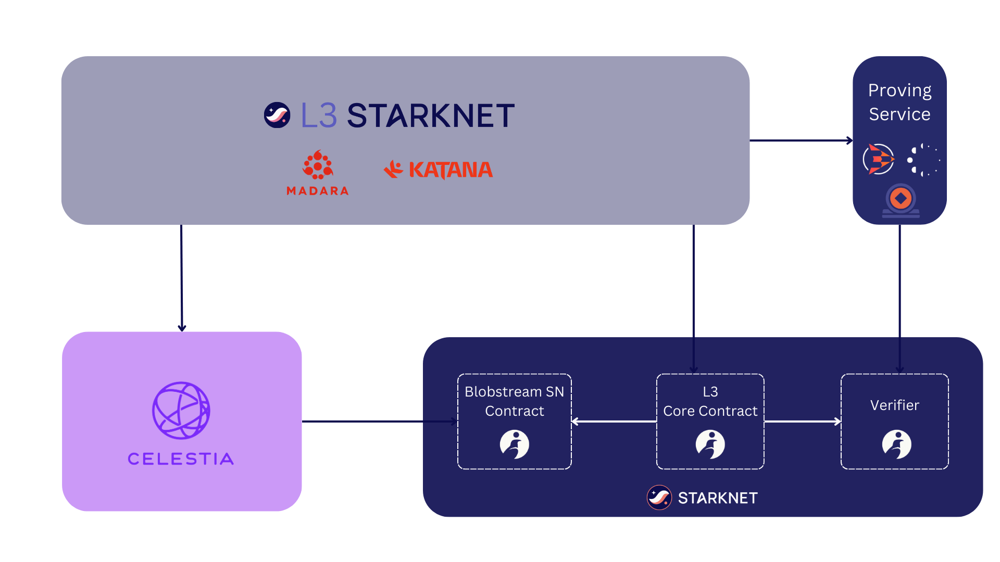

Blobstream Starknet
Celestia -> Starknet messaging bridge via Cairo Blobstream contracts. Enables possibilities like Starknet L3s that use Celestia as a Data Availability layer.

Let's journey down the blob hole...
Getting Started
There are several ways to run blobstream_sn:
- Install dependencies
- Run in a dev container
Install dependencies
blobstream_sn requires both scarb
and snfoundry. As scarb doesn't
currently have dependency version resolution we will use asdf:
- install asdf
- navigate to project root
- run
asdf install
Run in a dev container
Dev containers provide a dedicated environment for the project. Since the dev
container configuration is stored in the .devcontainer directory, this ensures
that the environment is strictly identical from one developer to the next.
To run inside a dev container, please follow Dev Containers tutorial.
Build
Contracts
Open a terminal and run:
scarb build
This will build the smart contracts into target directory.
Test
Contracts
Open a terminal and run:
snforge test
This will execute the tests in tests directory and print the results.
Overview

Blobstream Starknet integrates Celestia's modular Data Availability layer with Starknet, allowing L3s and dapps to submit DA to Celestia and then verify DA on Starknet through Blobstream.
Blobstream : Modular Data Availability Layer
Blobstream is a solution developed by Celestia Labs to stream Celestia's modular DA layer to Ethereum. Blobstream relays commitments of Celestia's data root using an on-chain light client. This enables Ethereum developers to create scalable L2s.
Celestia is based on Data Availability Sampling (DAS), which allows any user to contribute to DA for rollups by running a sampling light node. As the light node network grows, Celestia can scale without compromising security for end users.
To optimize Celestia as a DA layer, Succinct Labs contributed Blobstream X, a zero-knowledge (ZK) implementation that uses a ZK light client to verify Celestia validator signatures on-chain with a single ZK proof. This approach reduces overhead for validators, simplifies the core Celestia protocol, and enables faster streaming of data root commitments for Ethereum L2s.
Why Starknet L3s should use Celestia
Several key differences highlight the advantages of using Celestia for DA.
Scalability
With a modular approach to DA, Celestia maximizes data throughout by providing dedicated blobspace that is priced independently of Ethereum gas costs and unrelated execution. Also, by taking advantage of DAS and erasure codings, Celestia nodes can verify DA without checking all of the blob data posted.
Decentralization and Transparency
Other DA solutions, such as Data Availability Committees, introduce significant trust assumptions and liveness issues. This includes relying on a small committee of nodes to not withhold data. Celestia decentralizes the process by introducing a POS network where light nodes can detect if up to two-thirds of validators withhold data or produce invalid blocks, holding them accountable via slashing.
How does it work
The Blobstream Starknet contracts are ported into Cairo from their Solidity counterparts, allowing for more efficient and STARK-friendly execution.
L3s using Blobstream for DA verification must deploy a core contract onto Starknet L2. Starknet-like L3s could use piltover, a Cairo port for Starknet's L1 core contract.
Then the Starknet L3 can use Celestia as DA by :
- Posting blob data to Celestia
- Verifying the blobs DA on L2 via the BlobstreamX contract
Useful links :
Write to Celestia
Read from Celestia
Relayer
L3 Architecture